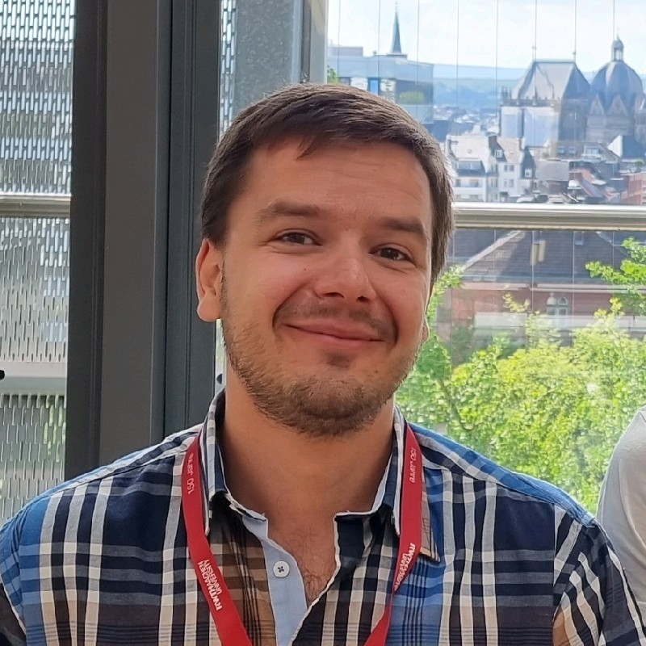

Resume - Vlad Paul Cosma
paul.cosma92(at)gmail.com
0045 42555428
Rymarksvej, 2900 Hellerup, Denmark
www.linkedin.com/in/vladpaulcosma
https://dblp.org/pid/182/5772.html
https://orcid.org/0000-0001-8022-6402
Current Position
Publications
Peer-reviewed Publications
Transforming Dynamic Condition Response Graphs to Safe Petri Nets. Petri Nets 2023: 417-439

 , Thomas T. Hildebrandt, Christopher H. Gyldenkærne, Tijs Slaats:
, Thomas T. Hildebrandt, Christopher H. Gyldenkærne, Tijs Slaats:BERMUDA: Participatory Mapping of Domain Activities to Event Data via System Interfaces. ICPM Workshops 2022: 127-139
BERMUDA: Towards Maintainable Traceability of Events for Trustworthy Analysis of Non-process-aware Information Systems. EMISA Forum 41(1): 33-34 (2021)
Braille Math Extension to RoboBraille - A Universal Software Solution for Converting Math into Braille. ICCHP (1) 2016: 15-18
Work experience
PhD Candidate February 2020 — June 2024
As a PhD Candidate I have been involved in:
▪ Dissemination activities Giving talks at conferences (Petri Nets, ICPM, Direc) and universities (University of Copenhagen, Utrecht University)
▪ Student supervision Bachelor students
▪ Teaching Selected lectures for the BSc. Healthcare Informatics programme (Healthcare Interoperability, Cloud based Apps)
▪ Teaching assistant Tutorial session for the BSc. Healthcare Informatics programme (Healthcare Interoperability, Cloud based Apps)
▪ Paper reviewing BPM Workshops & Demos, ICPM Workshops & Demos, Big Data Research Journal
Education
MSc. Software Engineering Jan 2016 — August 2018
▪ MSc. Thesis Analyzing neural network co-reference resolver
outputs
▪ Advanced Programming Functional Programming (Scala)
▪ Applied Algorithms, Algorithms Design Optimization
(C++/Java)
▪ Programming Languages Concepts and Implementation (C/C#)
▪ Multi threaded Programming (Java/Erlang)
▪ Intelligent Systems Programming (following Artificial Intelligence: A
Modern Approach by Stuart Russell and Peter Norvig)
▪ Big Data Management (Apache NoSQL databases)
▪ Linear Algebra Linear equations, derivatives, matrices,
vectors
MSc. Exchange Semester April 2017 — August 2017
▪ Machine Learning (Python/R, following Pattern Recognition and Machine
Learning by Bishop)
▪ Deep Learning in Computer Vision (Python with PyTorch)
▪ Statistical Modelling Linear Algebra, Calculus (R)
▪ Sensor model based Autonomous Driving (Python with focus on the Camera
Model, range estimation, sensor fusion)
▪ Selected Topics in Autonomous Driving (State of the art
overview)
Bachelor in Software Development August 2011 — June 2015
▪ Bachelor Thesis Braille Math Extension to RoboBraille: A server side
application for converting docx documents containing mathematics into braille
text
▪ Database Database Design ,PL/SQL, SQL, Oracle DB and MS SQL
Server
▪ Testing Unit testing, Acceptance Testing, Test planning, Integration
Testing
▪ Security General knowledge of attack vectors and how to combat them.
Development of secure a web application
▪ Contract Based Development Writing Design, Architecture and Requirement
Based Contracts towards developers
▪ System Integration Web Services (REST and SOAP) and Messaging in C# and
Java
▪ Development Of Large Systems Project Planning and Project/Process
Management for UP and Agile Projects
▪ Mid-term Project January 2014 A complete website (www.forkbra.dk) for the
distribution of the "ForkBra2" application, developed at Sensus Aps
▪ Web design/development HTML5, CSS3, JavaScript, JQuery, DOM Manipulation,
AJAX, XML
▪ Applied Development Methodologies Unified Process, Agile (SCRUM, XP,
TDD)
▪ Knowledge of Business Requirements, Organisational Behavior, Change
Management, Process and Product Reports, Networking
Mathematics and IT High School September 2007 — June 2011
Qualifications
Programming Competences
▪ C# 10+ years experience in a work environment using Visual
Studio
▪ Python 8+ years
▪ UML Modeling/Design 10+ years (+ DCR, BPMN)
▪ C/C++ 2 years
▪ Java 6 years
▪ SQL 10+ years
▪ Web development 10+ years (.NET, Typescript, Javascript, HTML5, CSS, Angular,
JQuery, Bootstrap)
▪ Mobile app development 9+ years (Android in Java, NativeScript, iOS in
Objective-C)
Work and research related Competences
▪ Communication skills gained by working in collaboration with partner/client companies from
across the world (B2B).
▪ Oratory skills gained by presenting projects as part of dissemination and face-to-face meetings towards technical and non-technical personnel.
▪ Ability to clearly express request and suggestions within a team.
▪ Adaptive in multicultural environments by working in collaboration with partners from across Europe, the US and Chile.
▪ Experience in project management gained by working on individual projects.
▪ Able to guide and give advice to others and clearly explain the project architecture, both at high and low technical level.
▪ Able to delegate tasks, assume responsibility and ask for guidance/advice when needed.
▪ Oratory skills gained by presenting projects as part of dissemination and face-to-face meetings towards technical and non-technical personnel.
▪ Ability to clearly express request and suggestions within a team.
▪ Adaptive in multicultural environments by working in collaboration with partners from across Europe, the US and Chile.
▪ Experience in project management gained by working on individual projects.
▪ Able to guide and give advice to others and clearly explain the project architecture, both at high and low technical level.
▪ Able to delegate tasks, assume responsibility and ask for guidance/advice when needed.
Interests
▪ Car Enthusiast, Autonomous Driving, Self Driving Cars
▪ Technology at the gap between Science Fiction and Science Fact
▪ Travelling, Roadtrips, Reading, Philosophy, Swimming, Running, Gym, Winterbathing, Cooking,
Hiking